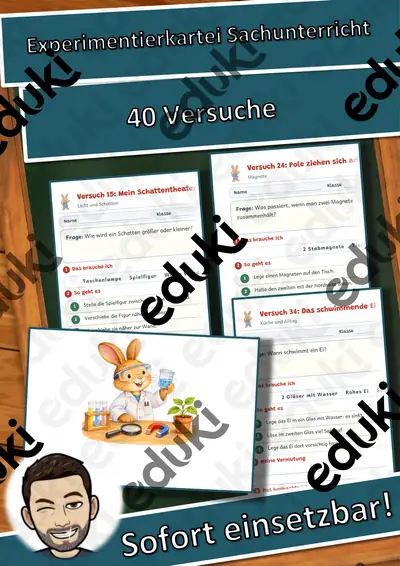
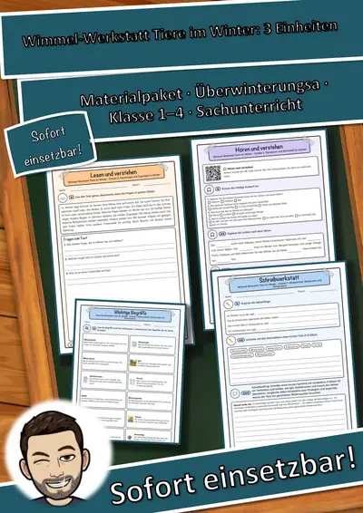
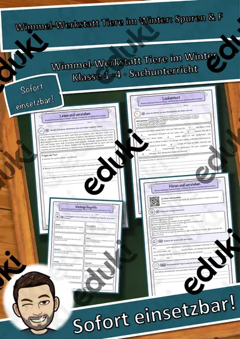
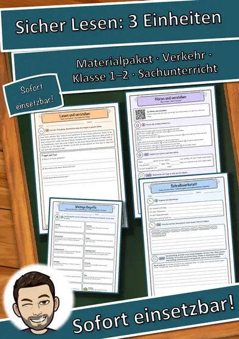

Dinosaurier könnten heute nicht überleben - Homeschooling
Dinosaurier sind schon seit vielen Millionen Jahren ausgestorben. Aber was wäre eigentlich, wenn das nicht passiert wäre? So ein kleiner Dino als Haustier ... irgendwie ein spannender Gedanke! Aber geht das? Dieses Arbeitsblatt (auch geeignet zur Heimarbeit, Homeschooling bei Schulschließung aufgrund des Coronavirus) zeigt auf, welche Probleme es geben würde.
FachSachunterricht
KlasseKl. 6–7
SchulformSek I Mittlere Schulform
MaterialartUnterrichtsreihen, Arbeitsblätter, Stationenlernen, Fördermaterial/Inklusion
Ähnliche Materialien

Persönlichkeiten-Kartei Astronomie und Raumfahrt – Lesekartei mit 22 Persönlichkeiten, 3-fach differenziert (Klasse 3–6)

Coronavirus: Wie ansteckend sind Kinder? - Homeschooling

Tafelmaterial Steinzeit

Experimentierkartei Sachunterricht: 40 Versuche

Wimmel-Werkstatt Tiere im Winter Materialpaket: 3 Einheiten – Sprachförderung und Sachwissen mit Wimmelbildern (Grundsch

Wimmel-Werkstatt Tiere im Winter Wimmel-Werkstatt Tiere im Winter – Einheit 3: Tierspuren und Winterfell im Schnee – Spr
Wimmel-Werkstatt Tiere im Winter Wimmel-Werkstatt Tiere im Winter – Einheit 1: Winterschlaf, Winterruhe und Winterstarre
